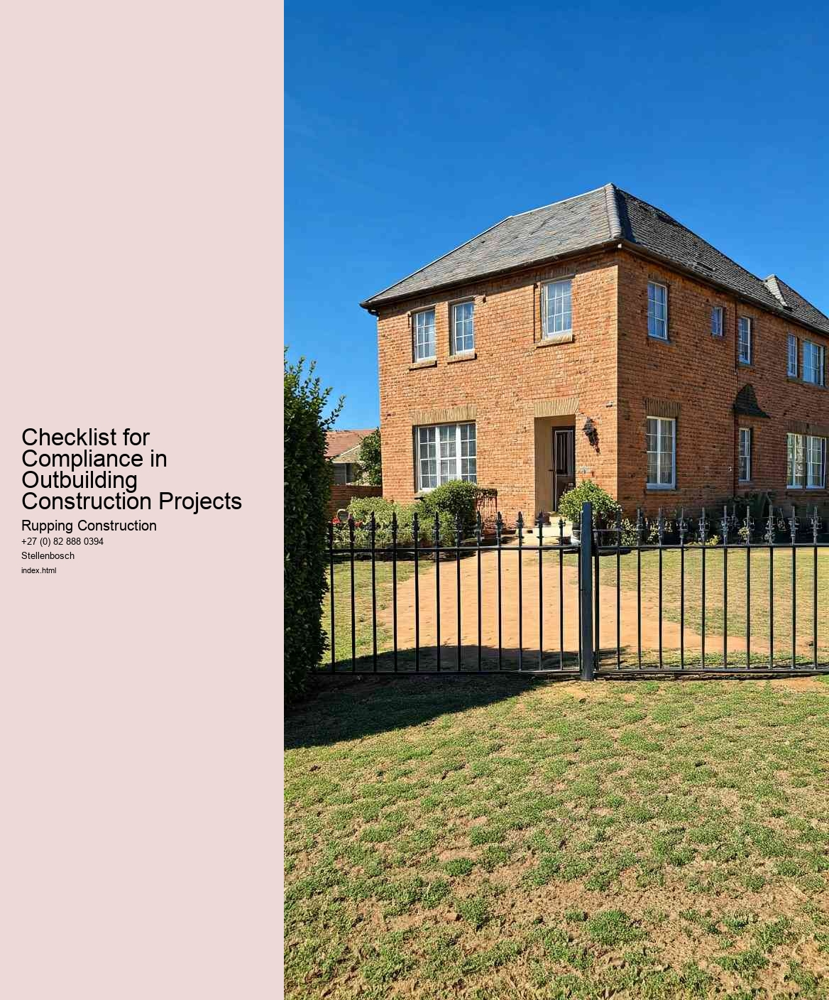

When embarking on an outbuilding construction project, understanding local building regulations is a critical component that can significantly impact the success and legality of the endeavor. These regulations are put in place to ensure safety, maintain aesthetic standards, and protect the environment. Therefore, its crucial for homeowners and builders to familiarize themselves with these guidelines before any construction begins.
First and foremost, every locality has its own set of building codes and zoning laws that dictate what can and cannot be built in a specific area. These regulations can vary widely based on the municipality, so it is essential to check with local authorities or the planning department to obtain the most accurate and relevant information. This often involves examining zoning ordinances that outline land use, property lines, and building heights, as well as any restrictions related to the type of outbuilding being constructed, whether it's a shed, garage, or guest house.
Another important aspect to consider is obtaining the necessary permits before construction starts. Many jurisdictions require permits for any form of building work, including outbuildings. These permits ensure that the proposed construction complies with local codes and standards, and they often involve submitting detailed plans that outline the project's specifications. Failing to obtain these permits can lead to significant fines, forced removal of the structure, or other legal repercussions.
Its also important to consider safety regulations, which cover aspects such as electrical installations, plumbing, and structural integrity. These regulations are designed to protect both the occupants of the outbuilding and the surrounding community. Ensuring that the construction adheres to safety standards not only fulfills legal obligations but also provides peace of mind for the owner and users of the space.
In addition to safety and zoning laws, aesthetic regulations may also come into play. Homeowners' associations (HOAs) or neighborhood guidelines may impose restrictions on the appearance of outbuildings to maintain a consistent look throughout the community. This can include color schemes, materials, and design elements. Understanding these requirements ahead of time can prevent conflicts with neighbors and ensure that the new structure complements the existing environment.
Lastly, engaging with local contractors or builders who are familiar with the area's regulations can be an invaluable resource. Their expertise can help navigate the complexities of compliance and streamline the permitting process. Moreover, they can offer advice on best practices that align with local standards, ultimately leading to a smoother construction experience.
In conclusion, understanding local building regulations is an essential step in the planning and execution of outbuilding construction projects. By taking the time to research and comply with these regulations, homeowners can avoid legal complications, ensure safety, and contribute positively to their community's aesthetics. A thorough checklist for compliance will not only facilitate a successful project but also enhance the value and enjoyment of the new outbuilding for years to come.
When embarking on an outbuilding construction project, one of the most critical aspects to consider is obtaining the necessary permits and approvals. This process is not merely a bureaucratic hurdle; it is a vital step that ensures your project complies with local regulations, zoning laws, and safety standards. Understanding which permits are required can save you time, money, and potential legal issues down the line.
Firstly, it's essential to recognize that the type of permits needed can vary significantly based on your location and the specifics of your project. Most areas require a building permit, which verifies that the construction plans meet local building codes. Additionally, if your outbuilding will involve electrical work, plumbing, or HVAC systems, you may need specialized permits for each of these systems. Moreover, if your construction site is in a designated historical district or near a protected area, additional approvals may be necessary to preserve the character of the neighborhood or to protect the environment.
Another critical factor to consider is zoning regulations. Before you even begin your construction, its wise to check with your local zoning office to ensure that your outbuilding complies with land use regulations. These regulations dictate not only the types of structures that can be built in certain areas but also the size, height, and placement of the building on your property. Failing to adhere to these regulations can result in fines or even being ordered to dismantle your outbuilding.
In addition to local permits, you may also need to consider other approvals, such as homeowner association (HOA) permissions if you live in a community governed by an HOA. These associations often have their own set of rules regarding construction, aesthetics, and property modifications. Obtaining the necessary approvals from your HOA can help you avoid disputes with neighbors and ensure that your project aligns with community standards.
The application process for permits can vary in complexity and duration. It often involves submitting detailed plans, paying application fees, and, in some cases, attending public hearings. It's advisable to start this process early, as delays in obtaining permits can significantly push back your construction timeline. Engaging with local officials and seeking guidance can be beneficial in navigating this process smoothly.
In conclusion, securing the necessary permits and approvals is a fundamental step in the outbuilding construction process. It not only facilitates compliance with legal and safety requirements but also helps to protect your investment and ensure a successful project. By being proactive and thorough in this aspect of your planning, you can pave the way for a seamless construction experience and avoid potential pitfalls that could arise from non-compliance.
Compliance with safety standards is a critical aspect of outbuilding construction projects. As these structures serve various purposes, from storage to workshops, ensuring they meet safety regulations is paramount not only for the protection of workers but also for future users. A checklist for compliance can serve as a valuable tool to systematically address the myriad of safety concerns that arise during construction.
First and foremost, understanding the relevant safety standards is essential. These standards often stem from local building codes, national regulations, and industry best practices. Familiarity with these guidelines helps project managers and construction teams identify the key areas that require attention. The checklist should include items such as proper site preparation, structural integrity, and the safe use of materials. Each of these elements plays a significant role in preventing accidents and ensuring that the outbuilding is safe for its intended use.
Another crucial component of compliance involves assessing the qualifications and training of the workforce. Construction teams should be well-versed in safety practices and equipped with the necessary protective gear. The checklist should include verification of training certifications, the availability of personal protective equipment (PPE), and regular safety briefings. These measures not only foster a culture of safety but also reduce the risk of workplace injuries.
Moreover, the checklist should address environmental considerations. Compliance with safety standards does not solely pertain to human safety; it also encompasses the protection of the environment. This includes ensuring proper waste disposal, minimizing noise and air pollution, and adhering to guidelines for the handling of hazardous materials. By incorporating these elements into the compliance checklist, project managers can mitigate the environmental impact of construction activities.
Regular inspections throughout the construction process are also vital to maintaining compliance with safety standards. The checklist should outline a schedule for inspections, which allows for timely identification and rectification of any discrepancies. This proactive approach not only ensures adherence to safety standards but also enhances the overall quality of the construction project.
In conclusion, compliance with safety standards in outbuilding construction projects is a multifaceted endeavor that requires careful planning and execution. A comprehensive checklist serves as a practical guide to navigate the complexities of safety regulations. By focusing on training, environmental considerations, and regular inspections, construction teams can create a safe working environment and produce structures that are not only functional but also secure. Ultimately, prioritizing safety compliance benefits everyone involved, from workers to future users of the outbuilding.
Environmental considerations and sustainability have become essential components of modern construction practices, particularly in outbuilding construction projects. As the global community becomes increasingly aware of the impacts of climate change, resource depletion, and environmental degradation, stakeholders in the construction industry are urged to adopt a more responsible approach. A checklist for compliance in outbuilding construction projects can serve as a practical tool to ensure that these considerations are integrated into every phase of the project, from planning to execution.
First and foremost, assessing the site for environmental impact is crucial. This involves evaluating the existing landscape, local ecosystems, and any potential disruptions to flora and fauna. Implementing sustainable site selection practices can help mitigate harm to the environment. For example, choosing previously developed sites can minimize the impact on natural habitats. Additionally, understanding local zoning laws and environmental regulations will ensure compliance and promote responsible land use.
Water management is another critical aspect of sustainability in construction. Efficient water use during the building process and the implementation of systems to collect and reuse rainwater can significantly reduce overall water consumption. Furthermore, ensuring that the construction activities do not pollute nearby water bodies is essential for preserving local ecosystems. Utilizing permeable materials in driveways and walkways can help manage stormwater runoff, reducing erosion and sedimentation.
Energy efficiency must also be a priority during the construction of outbuildings. Incorporating renewable energy sources, such as solar panels or wind turbines, can reduce a buildings reliance on non-renewable energies. Additionally, selecting energy-efficient materials and appliances not only contributes to lower operational costs but also aligns with broader sustainability goals. Passive design principles, such as maximizing natural light and optimizing insulation, can further enhance energy efficiency while providing a comfortable living or working environment.
Material selection plays a vital role in promoting sustainability. Utilizing locally sourced, sustainable materials can significantly reduce the carbon footprint associated with transportation. Furthermore, opting for recycled or reclaimed materials not only minimizes waste but also supports a circular economy. It is essential to avoid materials that contain harmful chemicals or that cannot be recycled at the end of their life cycle, as these choices can have long-term negative impacts on both human health and the environment.
Finally, engaging with the local community throughout the construction process fosters transparency and collaboration. This engagement can help identify local environmental concerns and ensure that the project aligns with community values and needs. Moreover, educating contractors and workers about sustainable practices can foster a culture of environmental responsibility on-site, leading to better compliance and outcomes.
In conclusion, environmental considerations and sustainability are integral to the success of outbuilding construction projects. By adhering to a comprehensive checklist for compliance that encompasses site assessment, water and energy management, material selection, and community engagement, stakeholders can contribute to a more sustainable future. This proactive approach not only benefits the environment but also enhances the quality of life for future generations. As the construction industry continues to evolve, embracing these principles will be key to creating structures that are not only functional but also harmonious with the natural world.
Checklist for Compliance in Outbuilding Construction Projects
Checklist for Essential Features in Outbuilding Constructions